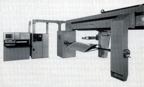
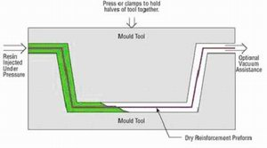
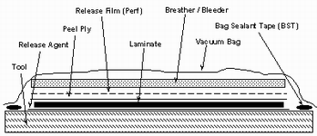

|
Elyaf
sarma (filament winding)
Bu
yöntem özel biçime sahip ürünlerin seri üretimine uygundur.
Elyaf sarma yöntemi sürekli elyaf liflerinin reçine ile ýslatýldýktan
sonra bir makaradan çekilerek dönen bir kalýp üzerine sarýlmasýdýr.
Sürekli liflerin farklý açýlarla kalýba sarýlmasýyla farklý
mekanik özelliklerde ürünler elde edilebilir. Yeterli sayýda
elyaf katýnýn sarýlmasýndan sonra ürün sertleþir. Ardýndan
döner kalýp ayrýlýr. Bu yöntemle yapýlan ürünler genellikle
silindirik, borular, araba þaftlarý, uçak su tanklarý, yat
direkleri, dairesel basýnç tanklarýdýr.

Resim
7. Elyaf sarma Makinesi
Reçine
transfer kalýplama RTM / reçine enjeksiyonu
Bu
kompozit üretim yönteminde elle yatýrma sistemlere daha hýzlý
ve uzun ömürlü olmakla birlikte iki parçalý kalýp kullanmak
gereklidir. Kalýbýn kompozit malzemeyle yapýlmasý çelik kalýp
maliyetine göre daha düþük kalmasýna neden olmaktadýr.
RTM yöntemi çoðunluk jelkotlu veya jelkotsuz her iki yüzeyinde
düzgün olmasý istenen parçalarda kullanýlýr. Takviye malzemesi
kuru olarak keçe, kumaþ veya ikisinin kombinasyonu kullanýlýr.
Takviye malzemesi önceden kalýp boþluðu doldurulacak þekilde
kalýba yerleþtirilir ve kalýp kapatýlýr. Elyaflar matris içinde
geç çözünen reçinelerle kaplanarak kalýp içerisinde sürüklenmesi
önlenir. Reçine basýnç altýnda kalýba pompalanýr. Bu süreç
daha fazla zaman ister. Matris enjeksiyonu soðuk, ýlýk veya
en çok 80ºC'ye kadar ýsýtýlmýþ kaplarda uygulanabilir.
Bu yöntemde içerideki havanýn dýþarý çýkarýlmasý ve reçinenin
elyaf içine iyi iþlemesi için vakum kullanýlabilir. Elyafýn
kalýba yerleþtirilmesini gerektirmesinden dolayý uzun sayýlabilecek
bir iþçilik gerektirir. Kalýp kapalý olduðu için ise zararlý
gazlar azalýr ve gözeneksik bir ürün elde edilebilir. Bu yöntemle
karmaþýk parçalar üretilebilir. Concorde uçaklarýnda, F1 arabalarýnda
bazý parçalar bu yöntemle hazýrlanmaktadýr.

Resim
8. RTM yöntemi
Profil
çekme / pultruzyon (pultrusion)
Pultruzyon
iþlemi sürekli sabit kesitli kompozit profil ürünlerin üretilebildiði
düþük maliyetli seri üretim yöntemidir. Pull ve Extrusion
kelimelerinden türetilmiþtir. Sisteme beslenen sürekli takviye
malzemesi reçine banyosundan geçirildikten sonra 120-150 ºC'ye
ýsýtýlmýþ þekillendirme kalýbýndan geçilerek sertleþmesi saðlanýr.
Kalýplar genellikle krom kaplanmýþ parlak çelikten yapýlmaktadýr.
Sürekli elyaf kullanýlmasýndan dolayý takviye yönünde çok
yüksek mekanik mukavemet elde edilir. Enine yükleri karþýlayabilmek
için özel dokumalar kullanmak gerekmektedir.
Hazýr kalýplama / compression molding (SMC, BMC)
Hazýr
kalýplama bünyesinde cam elyafý, reçine, katký ve dolgu malzemeleri
içeren kalýplamaya hazýr, hazýr kalýplama bileþimleri olarak
adlandýrýlan kompozit malzemelerin (SMC, BMC) sýcak pres kalýplarla
ürüne dönüþtürülmesidir. Karmaþýk þekillerin üretilebilmesi,
metal parçalarýn bünye içine gömülebilmesi, farklý cidar kalýnlýklarý
gibi avantajlarý bulunmaktadýr. Ayrýca ürünün iki yüzüde kalýp
ile þekillenmektedir. Diðer kompozit malzeme üretim tekniklerinin
olanak vermediði delik gibi komplike þekiller elde edilebilmektedir.
Iskarta oraný düþüktür. Bu yöntemin dezavantajlarý kalýplama
bileþimlerinin buzdolaplarýnda saklanmalarý gerekliliði, kalýplarýn
metal olmasýndan dolayý diðer kalýplardan daha maliyetli olmasý
ve büyük parçalarýn üretimi için büyük ve pahalý preslere
ihtiyaç olmasýdýr.
Hazýr
kalýplama yönteminde kullanýlan bileþimler içeriklerine göre
çeþitlilik göstermekle beraber en çok iki tür hazýr kalýplama
bileþimi kullanýlmaktadýr;
Hazýr kalýplama pestili / SMC (Sheet Moulding Composites)
SMC
takviye malzemesi olarak kýrpýlmýþ lif ile dolgu malzemesi
içeren bir reçinenin önceden birleþtirilmesi ile oluþan pestil
biçiminde malzemedir. Sürekli lifler, 25-50 mm kýrpýlmýþ olarak
ve kompozitin toplam aðýrlýðýnýn %25-30 oranýnda kullanýlýr.
Genellikle 1m geniþliðinde ve 3mm. kalýnlýðýnda üretilir.
Hazýr kalýplama hamuru / BMC (Bulk Moulding Composites)
BMC
takviye malzemesi olarak kýrpýlmýþ lif ve dolgu malzemesi
içeren bir reçinenin önceden birleþtirilmesi ile oluþan hamur
biçiminde malzemedir.
Hazýr
kalýplama bileþimlerinin avantajlarý;
- Çok
geniþ tasarým esnekliði
- Düzgün
yüzey
- Kolayca
laklanabilme, boyanabilme ve kalýp içinde yüzeyin kaplanabilmesi
- Geri
dönüþtürülebilme ve hazýrlýðýnda geri dönüþmü malzeme kullanabilme
- Metal
gömme parçalarýn yerleþtirilmesi ile montaj kolaylýðý
- Yüksek
alev dayanýmý
- Sýcaklýk
dayanýmý
- Soðukta
kýrýlgan olmamaenjeksiyon kalýplama (injection moulding)
Bu
yöntem RTM'ye benzer bir yöntemdir. Farklýlýðý reçine/elyaf
karýþýmýn kalýp dýþarýsýnda karýþmýþ ve eritilerek basýnç
altýnda boþ kalýp içine enjekte ediliyor olmasýndadýr. Sadece
düþük viskoziteye sahip termoset reçineler bu yöntemde kullanýlabilir.
Diðer yöntemlere göre daha hýzlýdýr. Çocuk oyuncaklarýndan
uçak parçalarýna kadar bir çok ürün bu yöntemle üretilebilmektedir.
Vakum bonding / vakum bagging
Kompozit
malzeme (genellikle geniþ sandöviç yapýlar) önce bir kalýba
yerleþtirilir, ardýndan bir vakum torbasý en üst katman olarak
yerleþtirilir. Ýçeridekði havanýn emilmesiyle vakum torbasý,
yatýrýlan malzemenin üzerine 1 atmosferlik basýnç uygulayarak
aþaðýya çekilir. Sonraki aþamada tüm bileþim bir fýrýna yerleþtirilerek
reçinenin kür iþlemi için ýsýtýlýr. Bu yöntem sýklýkla elyaf
sarma ve yatýrma teknikleri ile baðlantýlý olarak uygulanýr.
Kompozit malzeme tamir iþlemlerinde de vakum bagging yöntemi
kullanýlmaktadýr.

Resim 9. Vakum bagging
Otoklav
/ autoclave bonding
Termoset
kompozit malzemelerin performanslarýný artýrmak için elyaf/reçine
oranýný artýrmak ve malzeme içinde oluþabilecek hava boþluklarýný
tamamen gidermek gerekmektedir. Bunun saðlanmasý için malzemeyi
yüksek ýsý ve basýnça uygulayarak saðlanabilir. Vakum bagging
yöntemindeki gibi sýzdýrmaz bir torba ile elyaf/reçine yatýrmasýna
basýnç uygulanabilir. Fakat 1 atmosferden fazla düzenli ve
kontrol edilebilir bir basýncýn uygulanbilmesi için dýþsal
basýnca ihtiyaç duyulur. Bu uygulama için, otoklav yönteminde
de uygulanan ve kompleks þekillerde en çok kontrol edilebilen
metod, dýþarýdan sýkýþtýrýlmýþ gazýn kompozit malzemenin içinde
bulunduðu kaba verilmesidir.
Otoklav
kesin basýncýn, ýsýnýn ve emiþin kontrol edilebildiði basýnçlý
bir kaptýr. Vacuum bbagging yöntemi ile benzerdir. Fýrýn yerine
bir otoklav kullanýlýr. Böylece özel amaçlar için yüksek kalitede
kompozit üretebilmek için kür þartlarý tam olarak kontrol
edilebilir. Bu yöntem diðerlerine oranla daha uzun sürede
uygulanaýr ve daha pahalýdýr.
Preslenebilir takviyeli termoplastik/glass mat
reinforced thermoplastics (GMT)
Keçe
türünde elyaf takviyesi içeren termoplastik reçine ile yapýlmýþ
plaka þeklinde preslenebilir kalýplamaya hazýr özel amaçlý
bir takviyeli termoplastik çeþidini tanýmlamaktadýr. GMT nin
hazýrlanmasý SMC ye benzemektedir. Ekstruderden çekilen bir
termoplastik levha üzerine yumuþak haldeyken bir elyaf takviyesi
yerleþtirilir. Bu katmanlarýn üzerine bir diðer termoplastik
levhada yumuþakken yerleþtirilerek soðuk hadde silidirlerinin
arasýndan geçirilir. Sertþleþen plakalar kasilerek preslenmeye
hazýr duruma getirilir.
|